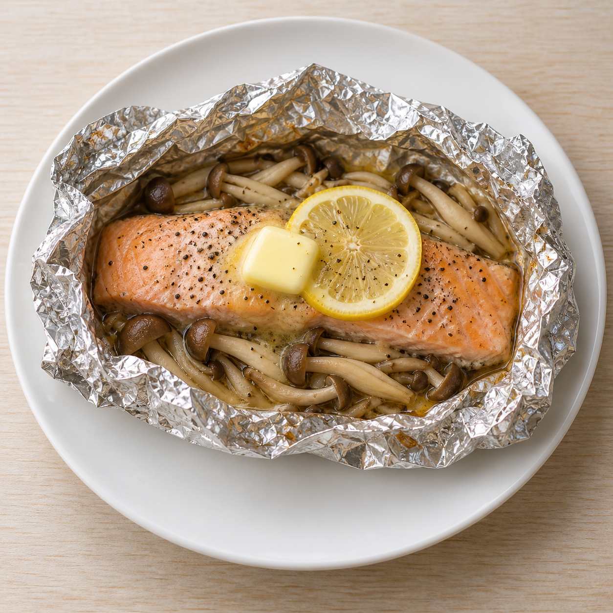
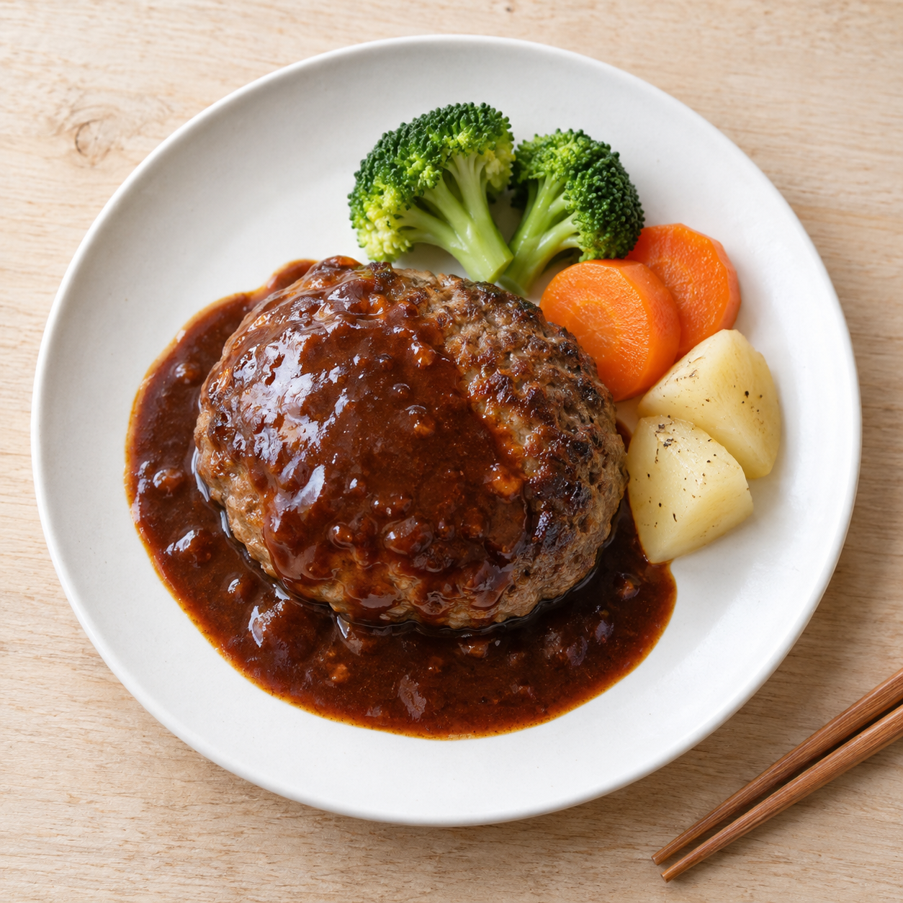
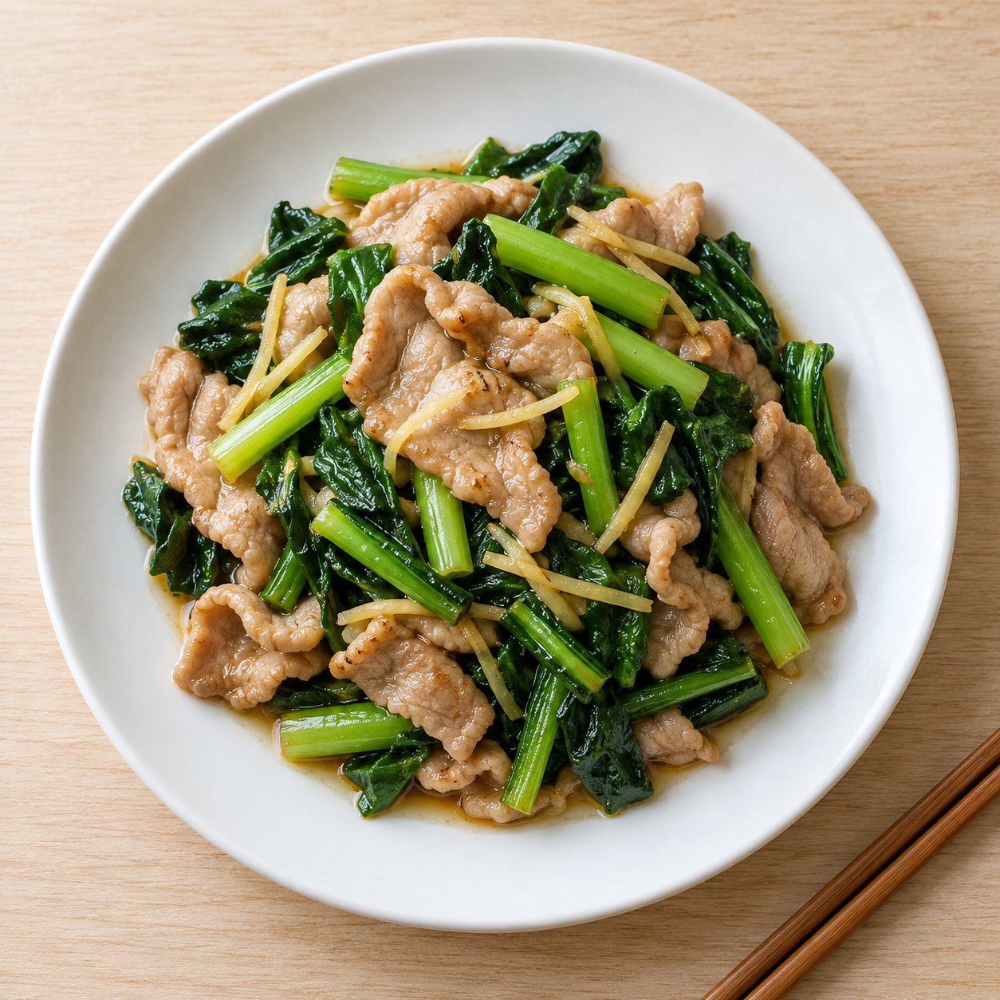

サンプル表示
こんだて表
9月7日〜13日
先週今週来週

作った
鮭のホイル焼き きのこバター
ほうれん草のおひたし · 豆腐の味噌汁

作った
手ごねハンバーグ
コールスロー · コンソメスープ

作った · ひとこと 1
豚こまと玉ねぎの甘辛炒め
冷やしトマト · なめこの味噌汁
作らなかった
別のものに
案は「鶏むねの南蛮漬け」でした
今夜 · 15分
豚こまと小松菜の生姜炒め
きゅうりの塩もみ · 豆腐とわかめの味噌汁
50分 · 週末向き
手ごねハンバーグ
サラダ · オニオンスープ